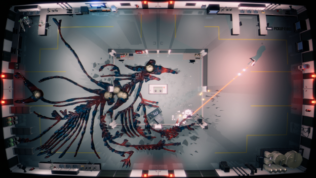

Deep inside a genetic research laboratory, scientists are pushing the boundaries of cell cloning technology in an attempt to dominate the lab-produced food industry. But a tissue replication experiment has gone wrong and given birth to a viral mass of cells that is spreading out of control and evolving into a creature from hell.
As a scientist trapped inside the lab with a few survivors, you must use your scientific experience to learn how the organism behaves, find it’s weaknesses and improvise a plan to escape.
Use any lab equipment you can find to slice tentacles off at their core and stunt the growth.
Explore room by room, make tough choices on when to fight, when to run and who to save.
Stay one step ahead of the creature by choosing your route to escape the lab. Every time you play you will learn more about the secrets of the lab and how to use them to your advantage to outsmart your enemy.
